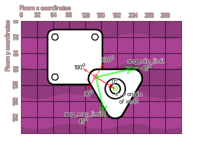

physics_joint_revolute_create(inst1, inst2, w_anchor_x, w_anchor_y, ang_min_limt, ang_max_limit, ang_limit, max_motor_torque, motor_speed, motor, col)
| Argumento | Descripción |
|---|---|
| inst1 | La primera instancia para conectarse con la articulación |
| inst2 | La segunda instancia para conectarse con la articulación |
| w_anchor_x | La coordenada x para la articulación, dentro del mundo del juego |
| w_anchor_y | La coordenada y para la articulación, dentro del mundo del juego |
| ang_min_limit | El límite inferior permitido para el ángulo de articulación |
| ang_max_limit | El límite superior permitido para el ángulo de la junta |
| ang_limit | Ya sea para limitar el ángulo de la articulación (verdadero) o no (falso) |
| max_motor_torque | Establece el par máximo del motor utilizado para alcanzar la velocidad deseada del motor (en Newtons por metro) |
| motor_speed | Esta es la velocidad a la que el motor debería girar |
| motor | Si el motor debe estar activo (verdadero) o no (falso) |
| col | Si las dos instancias pueden colisionar (verdadero) o no (falso) |
Devoluciones: índice de la articulación
Una articulación revoluta obliga a dos cuerpos a compartir un punto de anclaje común (a menudo llamado punto de bisagra) y la articulación tiene un único grado de libertad: la rotación relativa de los dos cuerpos alrededor de este punto. Para especificar una revolución, debe proporcionar dos instancias y un único punto de anclaje en la sala, como puede ver en la imagen proporcionada:
Si miras la imagen, puedes ver que las dos instancias han sido creadas para superponerse y en el punto donde se están tocando, hemos definido una unión de revolución. Ahora, esta articulación puede limitarse en su libertad de rotación gracias a los valores "ang_min_limit" y "ang_max_limit". ¿Como funciona esto? Bueno, veamos otra imagen:

Como puede ver, los ángulos en el mundo de la física no son los mismos que en los ángulos estándar de GameMaker Studio 2, donde el derecho es de 0 grados y luego va en sentido contrario a las agujas del reloj para que 90 sea arriba, izquierda 180 y abajo 270. No, cuando se trata de la articulación revolucionaria, el eje de 0 grados se extiende desde la posición conjunta hasta el origen de la segunda instancia definida por la función y los ángulos se calculan en sentido horario. Si activa la limitación de ángulo, los límites se definen como relativos a este eje de 0 grados y el rango límite debe incluir cero, de lo contrario, la articulación se tambaleará cuando comience la habitación. Finalmente, puede definir que la articulación tiene un motor o no. Esto significa que cuando no está influenciado por una colisión, la unión se moverá en una dirección, que se define por la velocidad del motor con un número positivo en sentido horario y un número negativo en sentido antihorario. El argumento "max_motor_torque" es para limitar la velocidad de la rotación para que no se obtenga un motor que se acelera constantemente y para limitar la influencia que una colisión puede tener sobre la rotación. De esta forma, puede usar un motor de articulación para simular la fricción de la junta al establecer la velocidad de la junta en cero y el par máximo en algún valor pequeño pero significativo. El motor intentará evitar que la articulación gire, pero cederá a una carga significativa.
Como con todas las uniones, si configura el valor "col" para true entonces las dos instancias pueden interactuar y colisionar entre sí, pero solo si tienen eventos de colisión, sin embargo, si está configurado para false, no colisionarán sin importar qué.
var mainFixture, o_id;
mainFixture = physics_fixture_create();
physics_fixture_set_circle_shape(mainFixture,
sprite_get_width(sprite_index) / 2);
o_id=instance_create_layer(x+25, y, "Instances", obj_Door);
physics_fixture_bind(mainFixture, id);
physics_fixture_bind(mainFixture, o_id);
physics_joint_revolute_create(id, o_id, x+25, y, -90, 90, 1, 0, 0,
0, 0);
physics_fixture_delete(mainFixture);
El código anterior crea y define un nuevo accesorio y luego crea una instancia de "obj_Door", vinculando el accesorio creado a los dos nuevos objetos. Luego se les une una articulación revolucionaria sin motor y los ángulos se limitan a un giro de +/- 90 grados. Finalmente, el dispositivo se elimina ya que ya no es necesario.